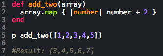
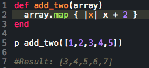
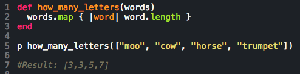

Let's Learn about #map in Ruby!
Or, my attempt to explain #map to myself
Today's topic is a simple and powerful method in the Enumerable class in Ruby, called #map. Here is the Ruby documentation for #map, which may or may not make any sense to you. (It may or may not make any sense to me!) Don't worry, hopefully I can explain it to you.
Basically, #map takes an existing collection of objects and returns a new collection of objects that is generated by doing the exact same thing to each object in the original collection. That sounds complicated. But it's not. Take a look at this code, in which #map is used to add 2 to every integer in the original array:
In this method named "add_two", the #map method is used add 2 to each number in the original array, and return the result as a new array. So [1,2,3,4,5] is the input, then #map adds 2 to each number, then #map returns a new array of [3,4,5,6,7]. Pretty simple, right?
The power comes from the flexibility of #map. Specifically, we can put whatever code we want into the codeblock (which in the above example is in line 2, the "number + 2" part). That word "number" is the variable name I decided to use in this example, and it refers to each item in the original array. The code means: add 2 to every object in the original array. I could have used any name in place of "number". In this example I use "x":
Did you catch that? I changed "number" to "x" and it still works exactly the same, because "x" (and in the previous example, "number") represents each item in the original array.
We can put methods in the #map code block. Check this out. In this one, we are going to take an array of words, and for each word #map is going to return the number of letters in each word:
So "cow" has 3 letters, "moo" has 3 letters, "horse" has 5 letters, etc. Notice that the #length method is used within the #map codeblock (#length returns the number of characters in a string of characters). As you can see, we could keep nesting methods in the codeblock and come up with some pretty complicated stuff.
Hopefully this makes sense! If it doesn't, don't blame me, I am new at this. Blame Johnny Ruby for writing his docs in such a way that we need another Rosetta Stone to read them. (That's right, Johnny Ruby invented Ruby. Don't look it up; just trust me. He's a real guy, like John Harvard. But he likes to be called Johnny.)